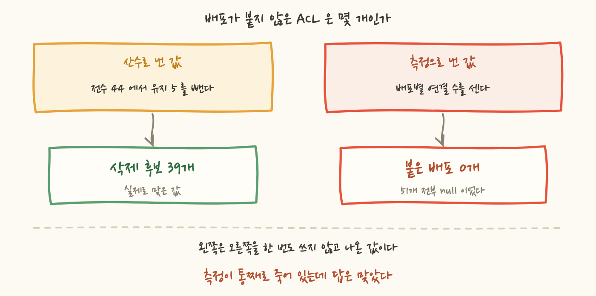
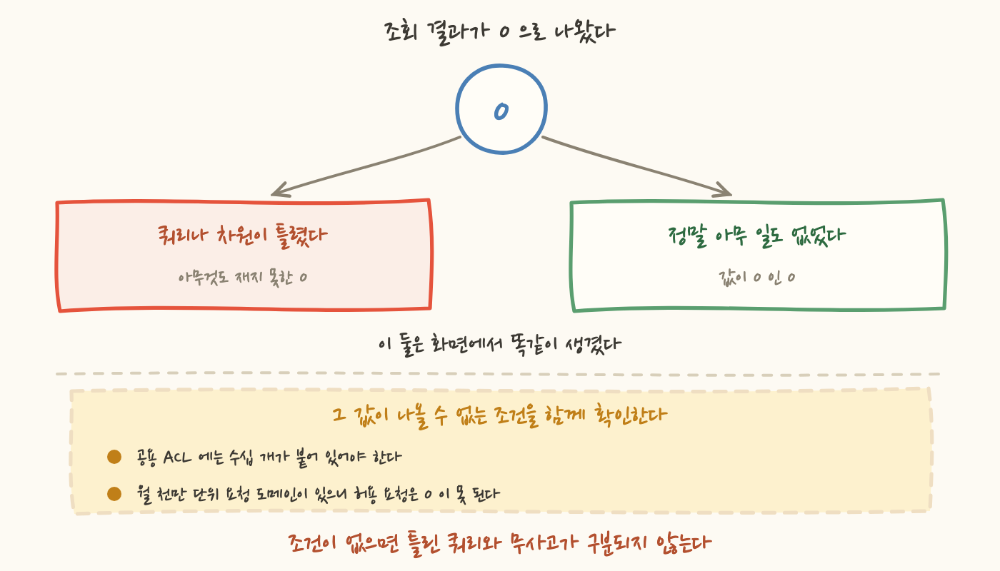
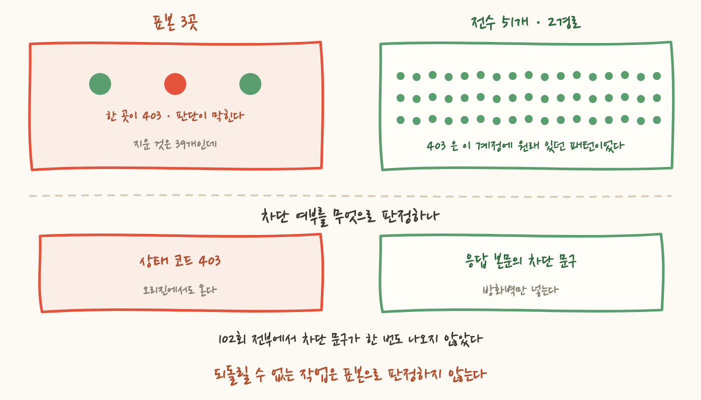

삭제 명령을 돌리기 직전이었어요. 웹 방화벽 ACL 이 계정에 44개 쌓여 있었고 대부분은 CDN 배포를 콘솔에서 만들 때 자동으로 딸려 생성되는 것들이라 이름이 CreatedByCloudFront- 로 시작했어요. 그중 배포가 하나도 붙어 있지 않은 것을 골라 지우는 작업이었어요. 판정 스크립트가 찍어준 숫자는 유지 5개, 삭제 후보 39개였습니다.
이 숫자는 맞았어요. 실제로 39개를 지웠고, 건너뜀 0, 실패 0, 사고 0 으로 끝났습니다.
그런데 그 숫자를 만든 쿼리는 배포 51개 전부에 null 을 돌려주고 있었습니다. 연결 수를 세는 부분이 통째로 죽어 있었는데 최종 답이 맞았던 거예요.
이 글은 그 이야기입니다. 틀린 쿼리가 맞는 답을 내놓을 때, 무엇이 그걸 잡아주나요? 그리고 저는 같은 함정을 삭제 후 검증에서 한 번 더 밟았습니다. 이 작업은 이번 절감 과제에서 되돌릴 수 없는 유일한 단계였고요.
삭제 대상을 고르려면 배포별로 어떤 ACL 이 붙어 있는지를 세야 합니다. 붙어 있는 ACL 은 남기고 아무 배포도 참조하지 않는 ACL 만 지우는 거니까요. 그래서 이렇게 조회했습니다.
원인은 응답 모델이었어요. 목록 API 가 돌려주는 항목은 배포의 전체 설정이 아니라 요약 객체입니다. 요약 객체에는 상세 설정 블록이 들어 있지 않고 ACL 식별자는 상세 설정 안이 아니라 요약 객체의 최상위 필드에 있습니다. 저는 없는 블록 안을 뒤진 거고 없는 경로를 파면 오류가 아니라 null 이 나옵니다.
여기서 무서운 건 오류가 안 났다는 게 아니에요. 그래도 최종 숫자가 맞았다는 겁니다. 이유는 싱겁습니다. 삭제 후보 개수를 저는 이렇게 얻고 있었어요.
전수는 ACL 목록을 세면 나오고 유지 목록은 코드가 참조하는 ACL 이라 저장소를 읽으면 나옵니다. 둘 다 배포 조회와 무관하게 구할 수 있는 값이에요. 그러니 39 는 배포를 한 번도 보지 않고 나온 숫자였습니다. 그런데도 정답이었고요.
그대로 지웠다면 결과는 같았을 겁니다. 하지만 그건 되돌릴 수 없는 삭제 39건을 검증 없이 실행한 것이에요. 결과가 같은 것과 근거가 있는 것은 다릅니다.

이걸 잡은 게 무엇이었는지가 이 글의 핵심이에요. 결과를 검토하다 이상함을 느낀 게 아니었습니다. 39 라는 숫자는 예상값과 정확히 같았으니 볼 이유가 없었어요.
잡은 것은 판정 단계에 넣어둔 가드 한 줄이었습니다.
이 결과가 이상한 이유는 "0 은 좀 낮은데" 같은 감이 아니에요. 구조적으로 나올 수 없는 값이었기 때문입니다. 유지 대상 5개 중 하나는 공용 ACL 이고 지우려는 ACL 39개에 원래 붙어 있던 배포가 바로 그 공용 ACL 로 옮겨져 있어야 합니다. 거기에 수십 개가 붙어 있지 않다면 애초에 이 삭제 작업이 성립하지 않아요. 그러니 "연결 0" 은 낮은 값이 아니라 있을 수 없는 값이었습니다.
쿼리를 고치니 집계가 맞아떨어졌습니다.
공용 ACL 의 39 와 삭제 후보 39 가 같은 숫자인 것도 이제 우연이 아니에요. 통합 작업으로 39개 배포를 공용 ACL 로 옮겼고 그래서 원래 붙어 있던 39개가 비었으니까요. 고치기 전에는 이 숫자 두 개가 서로를 확인해주지 못했습니다. 한쪽이 산수였고 다른 쪽이 null 이었으니까요.
정리하면 이렇습니다. 판정을 구한 계산은 틀렸는데 답이 맞아서 아무 신호가 없었고 답과 무관한 다른 값에 걸어둔 가드가 계산의 고장을 알려줬습니다. 가드를 그 자리에 두지 않았다면 저는 지금 이 글을 쓰지 못했을 거예요. 사고가 없었다는 게 아니라, 사고가 없었다는 걸 제가 증명할 수 없었을 겁니다.
39개를 지운 뒤에는 "아무것도 막지 않았다"를 확인해야 합니다. 지운 ACL 중 하나라도 실제로는 배포에 붙어 있었다면, 그 배포로 오는 요청이 방화벽 판정을 잃거나 차단으로 떨어질 수 있으니까요. 그래서 방화벽 지표를 봤습니다.
차단 0. 원하는 답이었어요. 여기서 끝냈으면 아주 깔끔한 마무리였을 겁니다.
그런데 허용 요청도 0 이었어요. 이 계정에는 월 천만 단위 요청을 받는 도메인이 하나 있고 그 요청은 방화벽을 지나갑니다. 몇 시간 창을 잡아도 허용 요청이 0 이 되는 일은 없어요. 허용 0 은 트래픽이 없다는 뜻이 아니라 제가 잘못 조회했다는 뜻입니다. 지표의 차원을 틀리게 지정해서 아무 데이터도 없는 시계열을 본 거였고요.
차원을 틀린다는 게 구체적으로 무엇인지 적어둘 값어치가 있어요. 방화벽 지표는 ACL 이름과 적용 범위, 그리고 지표가 발행되는 리전이 전부 맞아야 나옵니다. 하나만 어긋나도 오류 없이 빈 시계열이 돌아와요. 특히 CDN 앞단에 붙는 전역 범위 ACL 은 계정에서 평소 쓰는 리전이 아닌 곳에 지표를 발행하니 어긋나기 쉽습니다.
그리고 이 논증이 성립하는 범위도 좁습니다. "허용 요청이 0 일 수 없다"는 그 도메인을 실제로 받는 ACL 을 조회했을 때만 참이에요. 트래픽이 없는 다른 ACL 을 조회했다면 허용 0 이 정상값입니다. 불가능 조건은 자원 이름까지 붙여야 조건이 됩니다.
그리고 이게 중요합니다. 허용 0 이 틀린 조회의 결과라면, 같은 조회에서 나온 차단 0 도 아무것도 증명하지 않습니다. 두 값은 같은 쿼리에서 같이 나왔어요. 한쪽이 무의미하면 다른 쪽도 무의미합니다.
1장과 3장은 완전히 다른 실수처럼 보이지만 구조가 같아요. 한 번은 판정에서, 한 번은 검증에서, 같은 작업 안에서 두 번 밟았습니다.
여기서 나온 규칙은 하나예요. 0 이나 빈 값을 근거로 쓸 때는 "그 값이 나올 수 없는 조건"을 함께 확인합니다.
이번 작업에서 그 조건은 두 번 다 이미 손에 있었습니다. 앞에서는 "공용 ACL 에 수십 개가 붙어 있어야 한다", 뒤에서는 "허용 요청이 0 일 수 없다"였어요. 둘 다 작업의 전제에서 바로 나오는 문장이고 확인하는 데 몇 초도 안 걸립니다. 그런데 그 조건을 옆에 두지 않으면 잘못된 쿼리와 "아무 일도 없었다"가 화면에서 똑같이 생겼습니다. 둘 다 0 이니까요.
다만 이 규칙이 어디까지 가는지는 정직하게 좁혀야 해요. 불가능 조건은 기준선이 있을 때만 만들어집니다. 이번에는 통합 작업의 전제와 트래픽 규모를 이미 알고 있었으니 두 문장이 바로 나왔어요. 처음 보는 자원이나 감시가 붙은 적 없는 지표에는 그 문장을 만들 수 없습니다. 그때 할 일은 억지로 조건을 짜내는 게 아니라 0 을 근거 목록에서 빼는 것이에요. 그러면 방법이 두 개 남습니다. 직접 때려보는 실측과, 참조 관계로 영향 범위를 닫는 논증이요. 이 글의 5장이 그 두 개를 쓴 자리입니다.
0 은 특히 위험합니다. 다른 값이 틀리게 나오면 대개 이상해 보여요. 연결 수가 7 로 나왔는데 예상이 39 라면 바로 눈에 걸립니다. 그런데 0 은 "정상"의 모양이기도 합니다. 차단 0, 요청 0, 참조 0 은 우리가 보고 싶어 하는 값이에요. 그래서 조회가 죽었을 때 나오는 값과 성공했을 때 원하는 값이 겹칩니다.

규칙을 정리하다가 낯익은 문장을 떠올렸어요. 알람 커버리지 검사 스크립트에 제가 직접 써둔 주석입니다. 코드에 적힌 리소스 목록과 실물 목록을 대조해서 알람이 안 붙은 자원을 찾는 스크립트인데, 자기검사 절 맨 앞에 이렇게 적혀 있었습니다.
정확히 이번에 두 번 밟은 함정이에요. 그래서 그 스크립트에는 정상 입력을 넣어 파서가 실제로 값을 뽑는지 확인하는 자기검사가 붙어 있습니다. 빈 목록이 나오면 통과가 아니라 실패로 떨어지게요.
그런데 그 경고를 검사 스크립트에만 적용했습니다. 검사기는 오래 살고 여러 번 돌기 때문에 자기검사를 붙일 값어치가 있다고 생각했고 손으로 한 번 돌리는 조회 명령은 그 대상으로 안 봤어요. 이번에 배운 게 그겁니다. 조회 쿼리도 똑같이 조용히 빈 값을 내고, 그건 통과와 구분되지 않습니다. 오히려 조회 쪽이 더 위험해요. 검사기는 실패하면 CI 가 빨개지는데, 손으로 돌린 조회의 빈 결과는 제가 바라던 답과 모양이 같으면 그대로 근거가 됩니다.
그러면 2장에서 저를 구해준 그 가드는 어느 쪽이었나요. 손 쪽이었습니다. 판정 스크립트는 이 작업 하나를 위해 쓴 1회성 코드였고 제가 그 줄을 안 넣었으면 아무것도 안 막았어요. 그러니 정직하게 적자면 이건 게이트가 아닙니다. 다음에 되돌릴 수 없는 삭제를 하는 사람이 같은 조건을 갖게 하는 장치는 아직 없어요. 가드를 쓴 것과 가드가 켜져 있는 것은 다른 일입니다. 켜두려면 불가능 조건을 스크립트 안의 한 줄이 아니라 삭제 절차가 요구하는 입력으로 만들어야 하는데, 그건 남은 일이에요.
지표 조회가 무효였으니 다른 방법으로 확인해야 했습니다. 그래서 배포에 직접 요청을 보내 응답을 봤어요. 처음에는 대표 3곳만 골랐습니다. 전부 두드리는 게 과하다고 생각했거든요.
그 3곳 중 한 곳이 403 을 돌려줬습니다. 여기서 판단이 막혔어요. 방화벽이 막은 걸까요, 원래 그런 걸까요. 표본이 3개면 이 질문에 답할 방법이 없습니다. 비교할 대상이 없으니까요. 그리고 지운 것은 39개인데 3개를 본 것으로는 애초에 무엇도 말할 수 없었습니다.
그래서 배포 51개 전부를 두 경로로 때렸습니다.
경로를 둘로 나눈 이유는 실패 지점을 가르기 위해서예요. 별칭 쪽만 보면 DNS 나 인증서 문제가 방화벽 문제로 보일 수 있고, 기본 도메인 쪽만 보면 사용자가 실제로 타는 경로를 확인하지 못합니다.
그리고 판별 기준을 바꿨어요. 차단 여부를 상태 코드로 판정하지 않았습니다. 방화벽이 요청을 막으면 CDN 은 403 을 주는데, 403 은 오리진에서도 옵니다. 없는 키를 요청했을 때, 버킷 정책이 거부했을 때도 403 이에요. 상태 코드만 보면 이 셋이 구분되지 않습니다. 대신 방화벽이 막은 응답에는 본문에 고유한 차단 문구가 들어가요. 그 문구를 찾는 것으로 판정했습니다.
이 판별법에는 조건이 하나 붙습니다. 기본 차단 응답일 때만 그 문구가 나옵니다. 방화벽에 커스텀 응답 본문을 붙여두면 문구가 바뀌고 커스텀 응답으로 정상 화면과 비슷한 HTML 을 내보내게 해뒀다면 본문 판별 자체가 무력해져요. 그래서 순서가 이렇습니다. 설정된 차단 응답이 무엇인지 먼저 보고, 그다음에 그 응답에만 나오는 문자열을 판별 기준으로 정합니다. 이번에는 기본 응답이라 기본 문구를 그대로 썼습니다.
여기에 하나를 더 얹었어요. 지운 39개는 연결이 0 이었으므로 어떤 배포에도 영향을 줄 수 없다는 논증입니다. 그리고 삭제 후에도 붙어 있는 ACL 은 여전히 5종류에 합계 46 으로, 삭제 전과 같았습니다. 실측 102회와 이 집계가 같은 방향을 가리켜야 결론이 서는 거고요.

51개를 전부 두드리니 방화벽과 무관한 것이 하나 나왔습니다. 활성 배포 중 루트 경로가 2xx 도 3xx 도 아닌 것이 403 아홉 개, 404 다섯 개였어요. 표본 3개에서 만난 그 403 은 사고가 아니라 이 패턴의 일부였습니다.
한 배포로 원인을 따라갔어요.
원인이 세 겹으로 겹쳐 있었습니다.
세 번째가 배포마다 달라서 증상이 갈립니다. 어드민 배포와 dev 배포는 403 을 200 으로 바꿔 내보내도록 설정돼 있어서 같은 원인을 갖고도 정상으로 보였어요. 겹친 셋 중 하나만 달라도 증상이 사라지니, 이건 한참 굴러가도록 남아 있게 됩니다.
그래서 결과가 이래요. 화면은 정상으로 뜨는데 상태 코드는 403 입니다. 본문에 정상 화면의 HTML 이 그대로 실려 오니 브라우저는 렌더링을 합니다. 상태 코드를 보는 쪽은 다르게 읽어요.
이 시리즈에서 반복되는 그 침묵과 같은 종류예요. 죽은 DNS 가 15개월간 503 을 반환하고 있었는데 아무 신고가 없던 것도 같은 이유였습니다. 사용자가 신고하지 않는 고장은 사람이 감시하지 않으면 발견되지 않습니다.
이건 이번 작업이 만든 것도 아니고 방화벽과도 무관해요. 비용 과제에서 서비스 동작을 바꾸지 않기로 했으니 별건으로 남겼습니다. 다만 이런 걸 발견하는 방법 자체가 이 글의 논지예요. 표본 3개로는 절대 못 봤습니다. 51개를 다 두드려서 "403 이 아홉 개"라는 분포가 나왔을 때만 이것이 개별 사고가 아니라 구조적 패턴임을 알 수 있고요. 되돌릴 수 없는 작업의 전수 검증은 그 작업의 안전만 확인해주는 게 아니라 계정의 상태를 한 번 훑어주는 일이었습니다.
null 로 읽으며 죽어 있었다. 답이 맞았으니 아무 신호도 없었다.